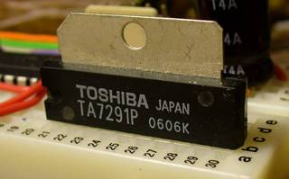
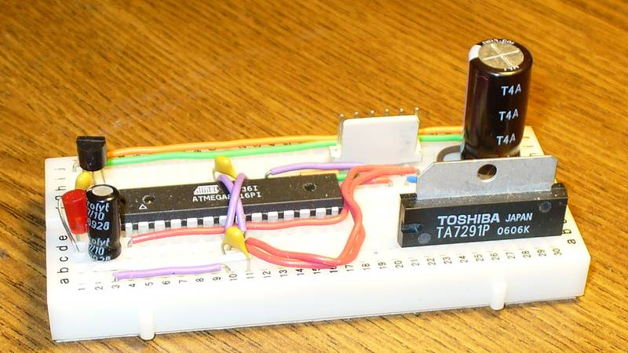
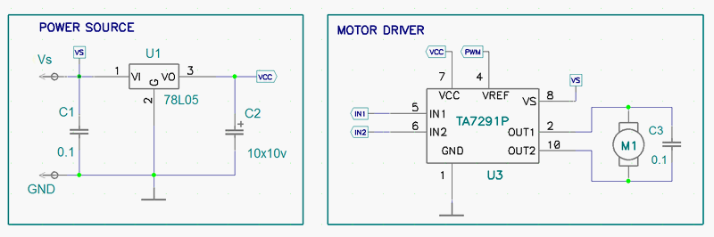
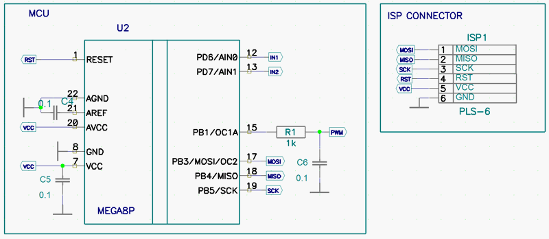

Практически в каждом роботе применяются электродвигатели. Для управления этими двигателями существуют специальные микросхемы — драйверы. Драйверы берут на себя заботу о полярности и величине напряжения, подаваемого на двигатель, ограничивают ток, и прочее и прочее.
Их много разных, но я остановился на хитрой японской микросхеме TA7291P. В первую очередь потому, что она продавалась у нас в магазине радиодеталей, к тому же она была дешевле и мощнее распространённой L293.
Вот макет:

Я закупил два варианта исполнения микросхемы — TA7291P и TA7291S. Второй имеет меньше ног (9 вместо 10), и не имеет теплоотвода. Соответственно, он менее мощный (средний ток 0.4A вместо 1A). Зато дешевле:)
| Название ноги | Номер ноги | Описание | |
|---|---|---|---|
| TA7291P | TA7291S | ||
| VCC | 7 | 2 | + питания (логика, 4.5..20В) |
| VS | 8 | 6 | + питания (мотор, 0..20В) |
| VREF | 4 | 8 | Опорное напряжение |
| GND | 1 | 5 | Земля |
| IN1 | 5 | 9 | Вход 1 |
| IN2 | 6 | 1 | Вход 2 |
| OUT1 | 2 | 7 | Выход 1 |
| OUT2 | 10 | 3 | Выход 2 |
Обратите внимание на вывод VREF. Микросхема следит, чтобы напряжение на двигателе было равно VREF + 0.7В. Таким образом, меняя напряжение на VREF, можно управлять скоростью двигателя. Выводы IN1/IN2 в этом случае используются только для смены режима работы.
| Вход | Выход | Режим работы | ||
|---|---|---|---|---|
| IN1 | IN2 | OUT1 | OUT2 | |
| 0 | 0 | Z | Z | Стоп |
| 1 | 0 | H | L | Вперёд |
| 0 | 1 | L | H | Назад |
| 1 | 1 | L | L | Тормоз |
Сначала я попытался менять скорость, подавая ШИМ на ноги IN1/IN2. Почему-то такой вариант не заработал, микросхема, несмотря на изрядный dead-time, грелась, мотор не крутился. В даташите по этому поводу сказано, что менять режим работы надо через режим Стоп. По-видимому, транзисторы там совсем медленные, и возникают сквозные токи. Я не стал воевать с этим, а просто сгладил ШИМ фильтром низкой частоты и подал его на VREF. Так всё заработало отлично. Правда в этом случае максимальное напряжение на моторе будет 5.7В, но для теста этого хватит.
Часть 1. Собственно драйвер и стабилизатор напряжения 5В:

Часть 2. Микроконтроллер и разъём для внутрисхемного программирования:

Программа написана под avr-gcc. Алгоритм работы такой:
Скорость разгона и замедления постепенно увеличивается.
Посмотреть видео работы тестовой программы можно на страничке Колёсная база.
© AHTOXA, Январь 2011.